إضافات
لآلئ التابيوكا والبوبا المتفجرة والجيلي وإضافات أخرى.
 Long-lasting tapioca pearls
Long-lasting tapioca pearls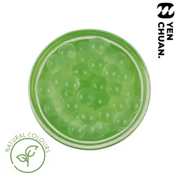
Popping boba (natural colours)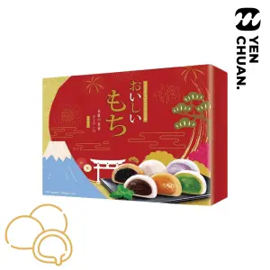
Filled mochi (5 flavours)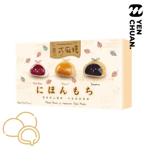
Filled mochi (3 flavours)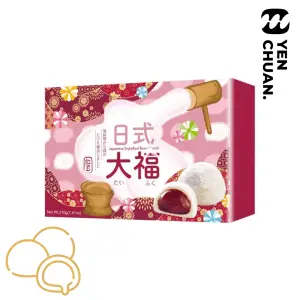
Filled mochi (single flavour)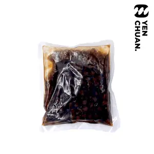
Agar balls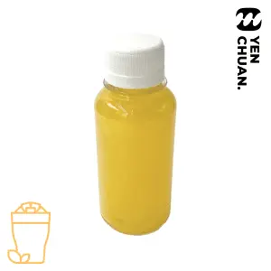
Shaped coconut jelly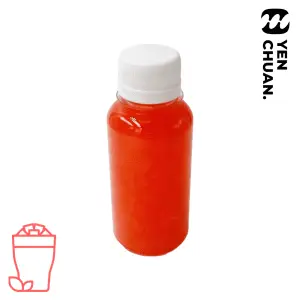
Coconut jelly Instant tapioca pearls (room temperature)
Instant tapioca pearls (room temperature)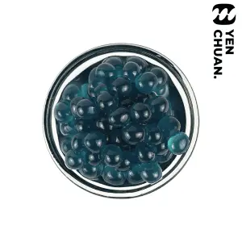
Popping boba Frozen dried tapioca pearlsInstant tapioca pearls (with syrup)
Frozen dried tapioca pearlsInstant tapioca pearls (with syrup)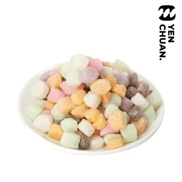
Mini mochi (mixed)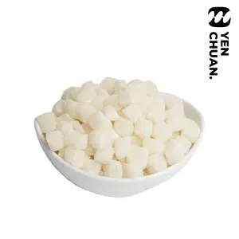
Mini mochi (original)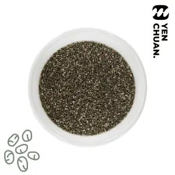
Sweet basil seeds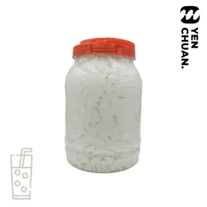
White jelly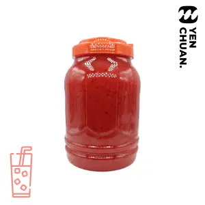
Red Jelly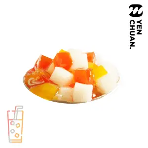
Rainbow Jelly Brown tapioca pearls
Brown tapioca pearls White tapioca pearls
White tapioca pearls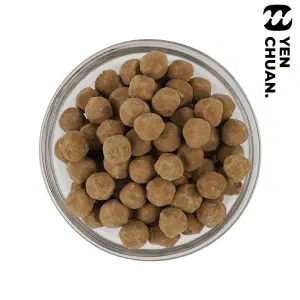
Dried black tapioca pearlsترجمة آلية تجريبية؛ أسماء المنتجات باللغة الإنجليزية.